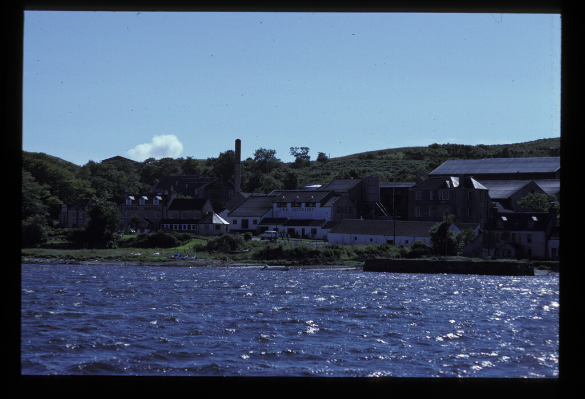
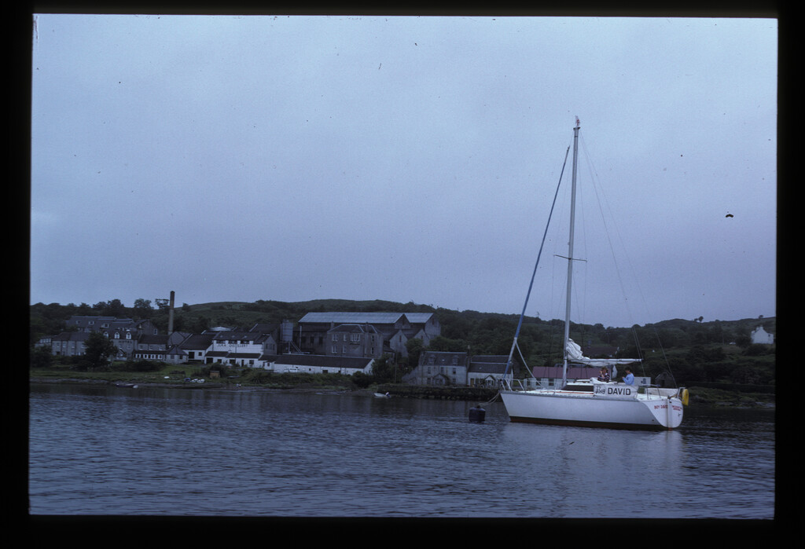
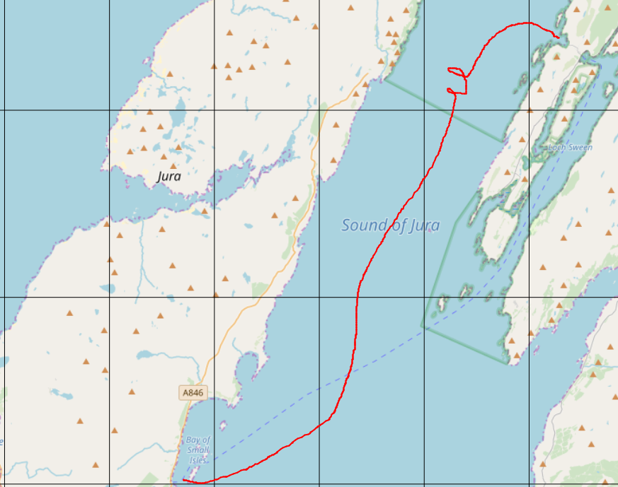
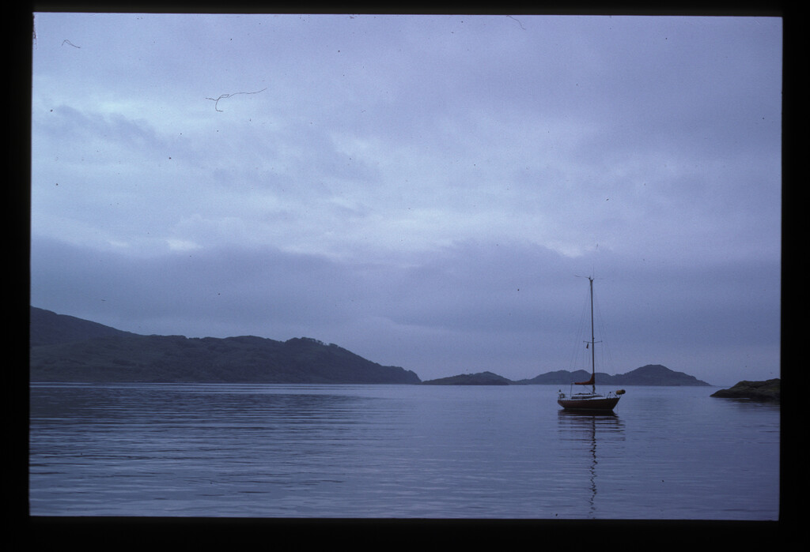
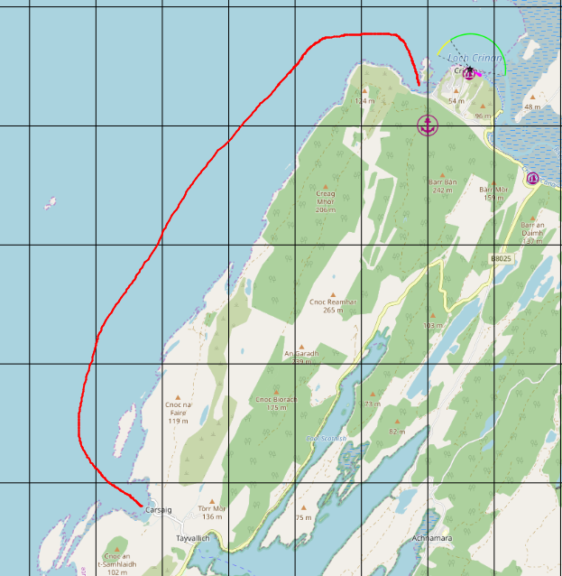
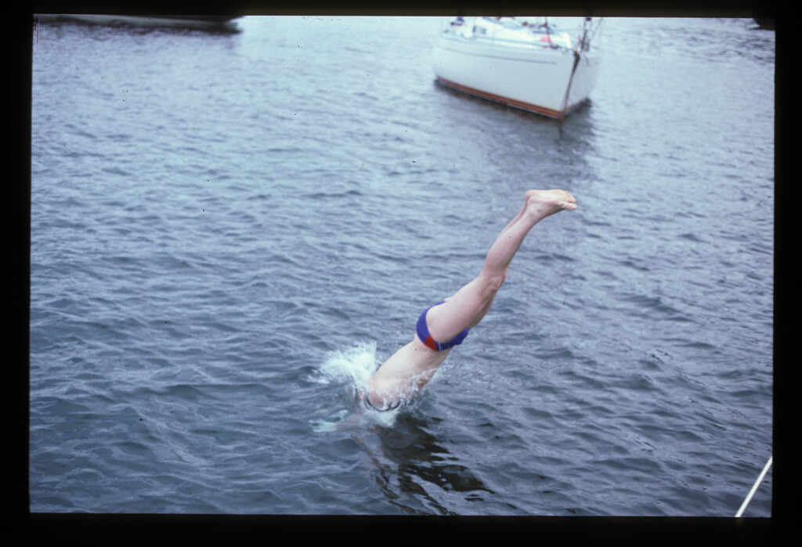

a sage from Ardfern marina told us it was "stoorie"
we sailed to to Crinan on day 2 with a glorious sunset that night.

|
|
| After sheltering in Adrfern on the
first night because a sage from Ardfern marina told us it was "stoorie" we sailed to to Crinan on day 2 with a glorious sunset that night. |
Boy david seeking shelter from the
storm. Doubtless we dined that night at the Galley of Lorne |
| |
 |
|
|
We woke to a breezy day. it made for
good sailing south to Craighouse Isle of Jura.
|
|
 |
 |
|
The breeziness can be seen here. We
watched them pick up their Highland and
Islands buoy under sail ar Craighouse |
Paps of Jura. There had been a plan
to climb them, but the following day
was cloudy |
|  |
 |
| Jura Distillery. Obviously the
output had to be sample. We dined and bathed (peaty water) in the Jura Hotel. Rowing back to the mooring was a bit of an adventure in the dark, a few pints in. (it was still breezy) |
We spent a day on Jura and set off
on a much calmer, foggy day - aiming for Crinan. |
|  |
 |
|
"aiming
for Crinan" - but soon fogbound in the Sound of Jura - no GPS
back then. We
floundered about with Charles blowing the aerosol foghorn. In a stroke of fortune we were found by a solo irishman who told us to follow him. He had been proceeding south and knew we were near Carsaig Bay on the Mull. He led us to said anchorage and to great relief we dropped the anchor into sandHe invited us over and offered us whisky. he was sailing back from the Faroes with what appeared to be a road map. |
I think this is the irishman's boat.
he invited us aboard. What a salty sea dog he was. Navigating with a road map. he had been to the Faroes and was on his way back. He offered us whisky. |
|  |
 |
|
A short sail back from Carsaig Bay
to Crinan
|
In Crinan, the womenfolk indulged
themselves at the hotel , while Charles and I victualled the ship. I had time for a quick bathe. |
|
We now made grand plans for Mull and
beyond. The first staging post was the idyllic
Puilldobrain Anchorage. Although isolated, a short walk takes one to the pub at the so called "bridge over the atlantic at Clachan of Seil" |
it can be seen from the adjacent
image that skeeliness of skipper is required
to access Puilldobrain Anchorage. Truth be told - I would not have been allowed - this is a spurious picture to the narrative. |
| We made grand plans to navigate the
Sound of Mull and end up in Tobermory. The best laid plans, however.......Assailed by a storm and by thunder and lightning. The womenfolk took seesickness pills and decamped below , leaving me and Charles to sail the Boy David. We cut our losses and nipped into Salen |
Apprehension fills the faces as the
lightning strikes. Anne was about to disappear below. |
 |
|
| A relatively short sail from Salen to the fleshpots of Tobermory. Tobermory harbour was much used during the war and there is all sorts of detritus on the sea bed. Anchoring was thus an acquired yaste. |
Tobermory became our home for a few days because a depression rolled in. Those two pubs - The Mishnish and (must google the other one) got a few bawbees from us |
| Ardnalanish bay,
Isle of Mull- wonderfully secluded little bay. The wind got up that night though and the boat swung 180 degrees on its anchor. The sail back to Ardfern to return the boat was breezy. |
Ardnalanish bay,
Isle of Mull
|
|